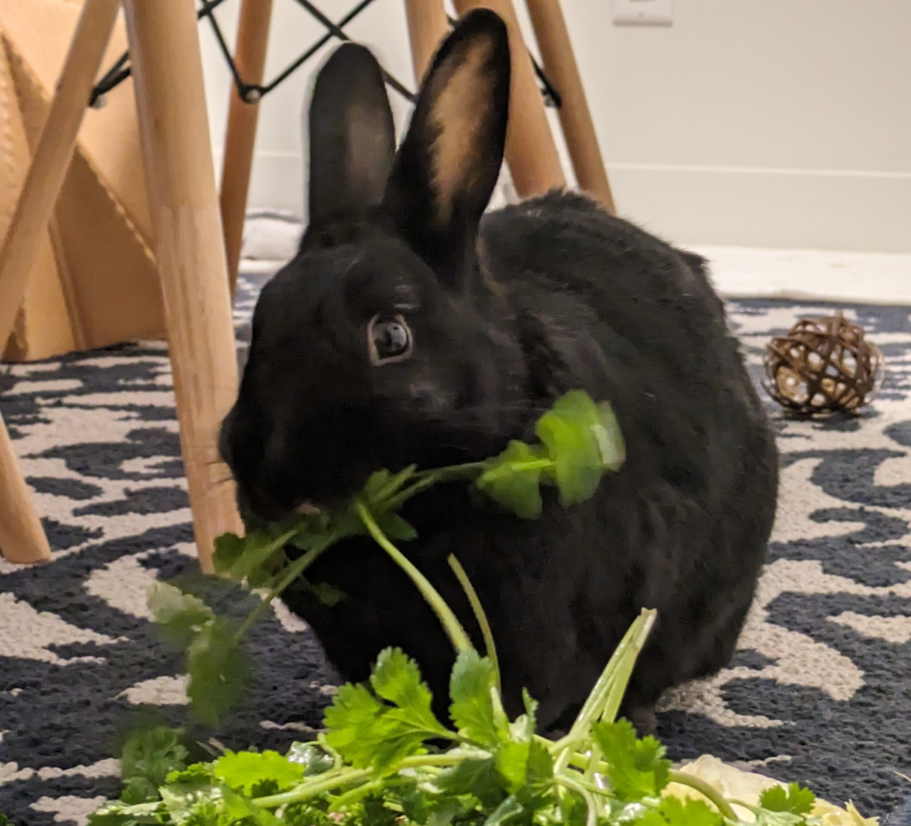
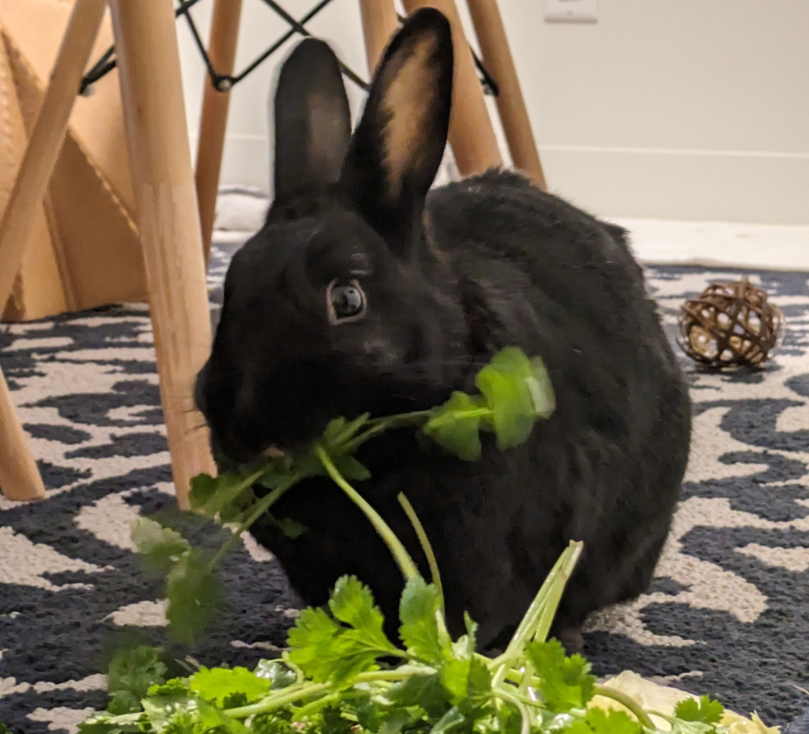

I am currently pursuing my PhD in the Parfrey lab at UBC where I study the microbiome of kelps and their response to climate change. My research combines field surveys and lab experiments, along with collaborations with the kelp farming industry.
Outside the lab, I work on projects promoting data accessibility and work at the UBC library, where I provide data analysis consultations and develop R workshops.
I am also an avid triathlete. I raced in the 2024 70.3 Ironman World Championships in New Zealand.
 

Science
... your Science section content ...
Non-Science
... your Non-Science section content ...
Contact me by email sschenk at mail.ubc.ca